193 منشوراً
أرشيف 2018
كانون الأول 2018
- أخبار الاتحاد · مناقشة رسالة الطالب أكرم فراج
-
 محاضرات وفعاليات · المؤتمر العربي الثاني عشر لعلوم الفضاء والفلك
محاضرات وفعاليات · المؤتمر العربي الثاني عشر لعلوم الفضاء والفلك
-
 أخبار علمية · خمسون عاما على إطلاق ابولو 8
أخبار علمية · خمسون عاما على إطلاق ابولو 8
-
 أخبار علمية · المركبة OSIRIS-REX تصل الكويكب BENNU
أخبار علمية · المركبة OSIRIS-REX تصل الكويكب BENNU
-
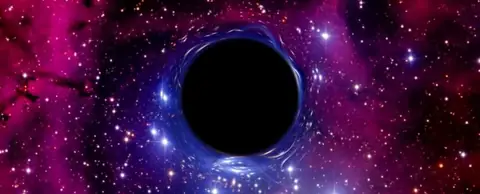
أخبار علمية · سوسكايند يقدم تصور للتوسع في الثقوب السوداء -
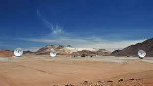
أخبار علمية · تلسكوب على جبل أم الدامي جنوب الأردن على ارتفاع 1854م. - أخبار علمية · تعرّف على مشروع “السماء الداكنة”.. لإنشاء أكبر محمية ضوئية في المغرب!..
-
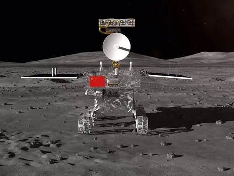
أخبار علمية · الصين تطلق مركبة فضائية لاستكشاف الجانب البعيد للقمر -
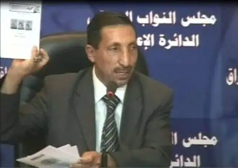
أخبار الاتحاد · شكر خاص للدكتور مجيد محمود الجراد عضو الاتحاد العربي لعلوم الفضاء - أخبار علمية · تفسير ظاهرة الشفق عند الحضارت القديمة.. وحدوثها على الكواكب الأخرى..
-
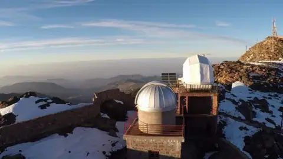
أخبار علمية · مرصد أوكيمدن ينافس كندا بأكبر محمية نجمية في العالم -
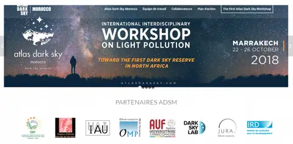
أخبار علمية · تعرف على مشروع Atlas Dark Sky -
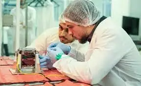
أخبار علمية · ولي العهد الأردني يعلن عن إطلاق أول قمر صناعي -
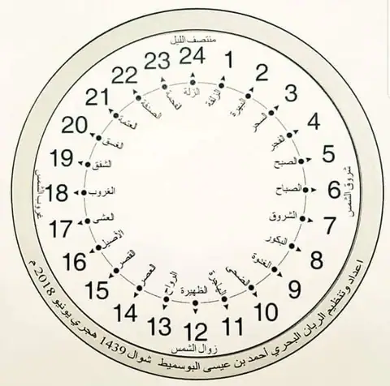
أخبار علمية · 24 لفظاً ومعانيها لتحديد ساعات الليل والنهار عند العرب قديماً -
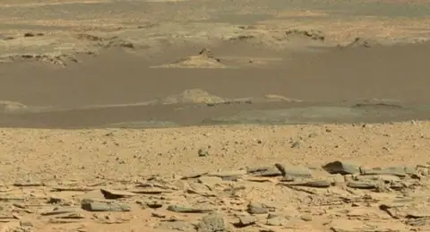
أخبار علمية · أصل الجسم اللامع الذي اكتشف على المريخ -
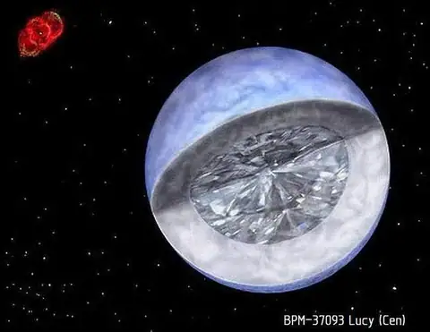
أخبار علمية · اكتشافات جديدة تثبت أن الفضاء مُذهل وغريب - أخبار علمية · لماذا تعد رحلة المريخ 2022 من أعظم رحلات الفضاء؟
-
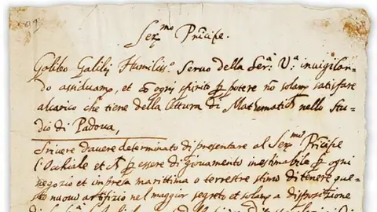
أخبار علمية · هل “كذب” غاليليو بشأن رسالته التي أشعلت المعركة التاريخية الأشهر بين الكنيسة والعلم؟
تشرين الثاني 2018
-
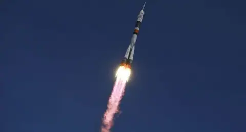
أخبار علمية · إطلاق المركبة الفضائية الروسية “أم أس 10” التي انطلقت من قاعدة بايكونور - أخبار علمية · تعامد القمر على الكعبة
-
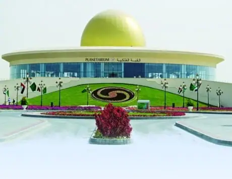
أخبار علمية · القبة الفلكية ومركز الفضاء في الشارقة -
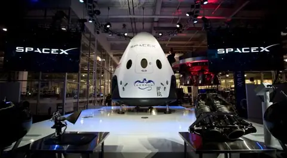
أخبار علمية · شركات خاصة لنقل رواد الفضاء – م. مثنى السراي -
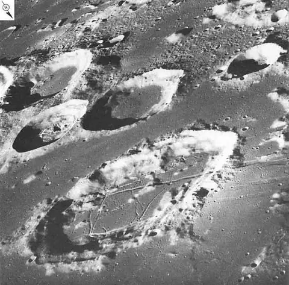
أخبار علمية · فوهات في كل مكان – محمد ريحان -
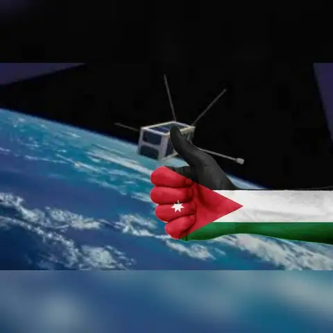
أخبار علمية · الأردن يعلن إطلاق أول قمر صناعي أردني مصغّر للفضاء في 19 نوفمبر الحالي -
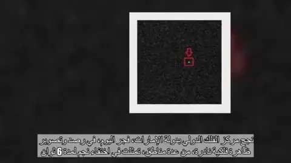
أخبار علمية · اختفاء نجم من سماء الإمارات لمدة 6 ثواني فجر اليوم -
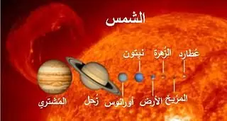
أخبار علمية · مقارنة بين احجام النجوم والكواكب
تشرين الأول 2018
-
 محاضرات وفعاليات · دعوة للتصويت
محاضرات وفعاليات · دعوة للتصويت
-
محاضرات وفعاليات · دعوة للتصويت لجائزة (The 2018 Space News Award for Excellence & Innovation)
-
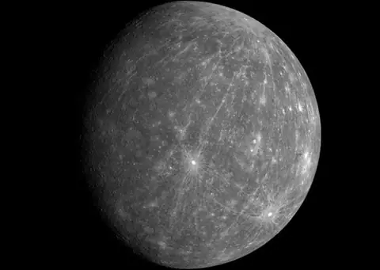
أخبار علمية · لماذا كوكب عطارد مهم بالنسبة لنا؟ -
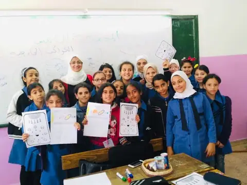
أخبار علمية · بعض النشاطات المستمرة مع مدارس وزارة التربية والتعليم ( زبيدة بنت جعفر الأساسية) -
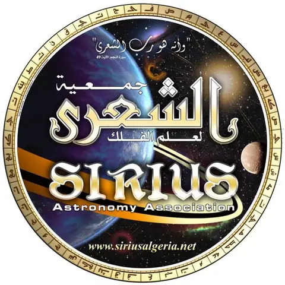
أخبار علمية · احتفالية جمعية الشعرى الفلكية / قسنطينة – الجزائر بمناسبة أسبوع الفضاء العالمي -
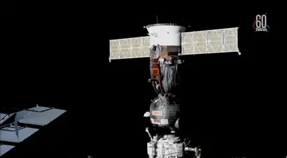
أخبار علمية · ناسا تخرج عن صمتها وتتحدث عن ثقب “سيوز” المثير للجدل - أخبار علمية · ما هي عسكرة الفضاء وهل يمكن إيقافها؟ محاضرة للدكتور حنا صابات
-
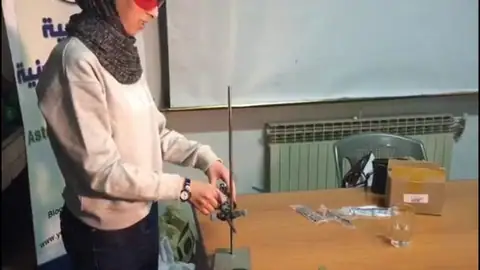
أخبار الاتحاد · تجربة ضغط الليزر ضمن مشروع واعد
أيلول 2018
- أخبار علمية · الورشة العلمية “استكشاف الفضاء والابتكار”
- أخبار علمية · صور لكائنات صغيرة الحجم، وراء اغلاق المرصد الشمسي
-
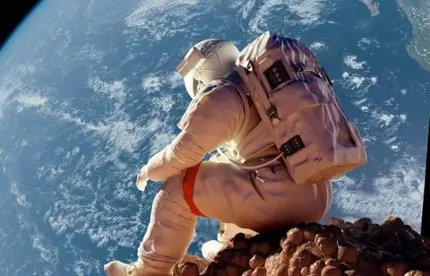
أخبار الاتحاد · الأردن يبحث التعاون الفضائي مع باكستان - أخبار علمية · موسم الصفري – الدكتور مجيد جراد
-
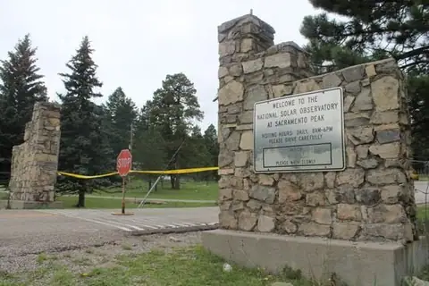
أخبار علمية · خبر عاجل: FBI تغلق مرصدا فضائيا بشكل مفاجئ في ظروف غامضة - أخبار علمية · الاعتدال الخريفي وتساوي الليل والنهار – ا. د. مجيد محمود جراد
-
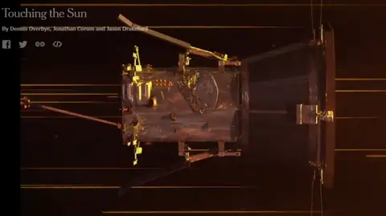
أخبار علمية · فديو رائع من نيويورك تايمز بعنوان: Touching the Sunيعطي إجابات على أسئلة. - مقالات · A Search for deviations from the inverse square law of gravity at nm range using a pulsed neutron beam
- أخبار علمية · إعلان اسم أول رائدي فضاء عرب للمحطة الدولية..
-
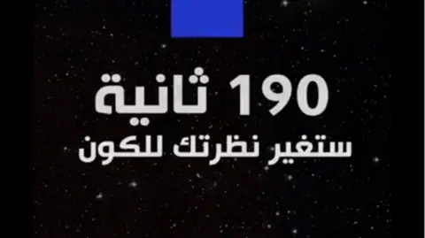
أخبار علمية · 190 ثانية ستغير نظرتك للكون - أخبار علمية · هل ممكن ان الانتروبيا تتناقص! في المختبر؟
-
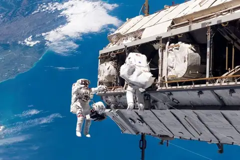
أخبار علمية · هل ما حصل بالمحطة الفضائية كان بفعل فاعل؟ -
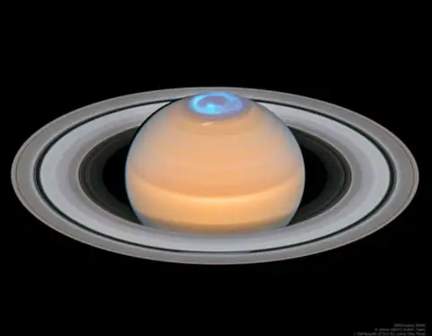
أخبار علمية · كل يوم صورة من بدائع الكون، مع شرح مبسط للمحتوى العلمي الذي تحمله الصورة -
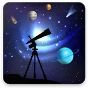
أخبار علمية · Astronomy Events with Push 4+ - أخبار علمية · شاهد “كرة نارية” تضيء سماء أستراليا – سي ان ان
-
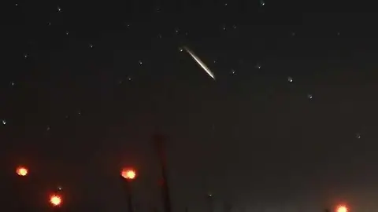
أخبار علمية · نيزك “دموي ضخم” يرعب سكان ولاية أسترالية! - أخبار علمية · مدارات -العدد الثامن-سبتمبر 2018
- أخبار علمية · الحلم العربي، المخيم الكشفي العربي
-
 محاضرات وفعاليات · صورة جماعية للمشاركين في المؤتمر العام للاتحاد الفلكي الدولي لعام ٢٠١٨
محاضرات وفعاليات · صورة جماعية للمشاركين في المؤتمر العام للاتحاد الفلكي الدولي لعام ٢٠١٨
آب 2018
-
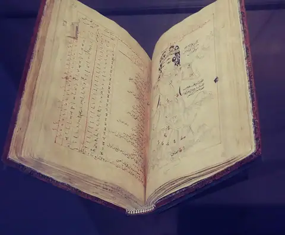
أخبار علمية · متحف اللوفر -كتاب الصوفي – صور الكواكب ال ٤٨ - أخبار علمية · إذا طلع نجم سهيل تلمس التمر في الليل …
-
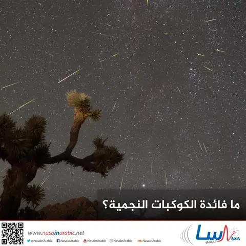
أخبار علمية · ما فائدة الكوكبات النجمية؟ -
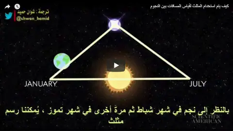
أخبار علمية · كيف يتم استخدام المثلث لقياس المسافات بين النجوم – يوتيوب -
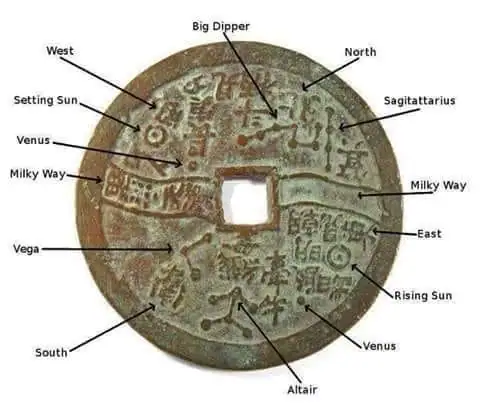
أخبار علمية · خريطة صينية قديمة تبين مواقع النجوم -
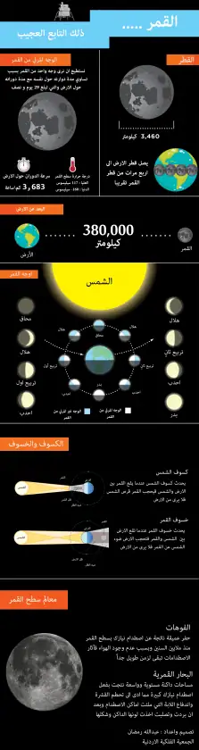
أخبار علمية · القمر ذلك التابع العجيب -
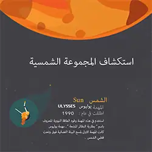
أخبار علمية · المهمات لاستكشاف المجموعة الشمسية -
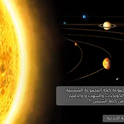
أخبار علمية · نسبة كتلة الشمس -
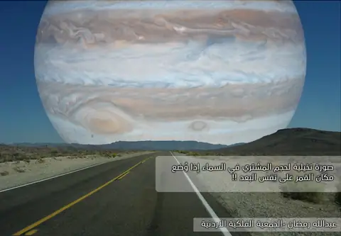
أخبار علمية · صورة تخيلية لحجم المشتري -
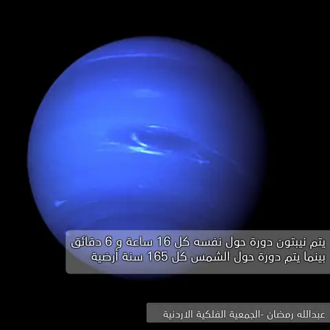
أخبار علمية · دوران نبتون - أخبار علمية · مسبار نيو هورايزنز
- أخبار علمية · كويكب له حلقات
- أخبار علمية · تشارون قمر بلوتو
-
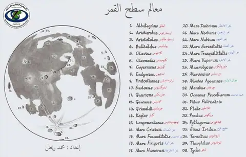
أخبار علمية · معالم سطح القمر -
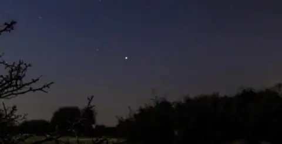
أخبار علمية · ظهور نجم سهيل(Canopus) وأنتهاء فصل الصيف -
 محاضرات وفعاليات · المهرجان الوطني الثامن للشباب هواة علوم الفلك وتقنيات الفضاء
محاضرات وفعاليات · المهرجان الوطني الثامن للشباب هواة علوم الفلك وتقنيات الفضاء
-
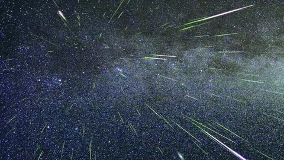
أخبار علمية · زخة من الشهب يشهدها العالم مساء الأحد القادم – م. محمد شوكت عود -
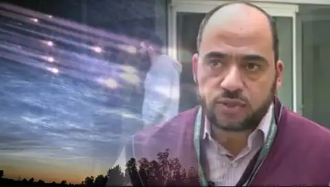
أخبار علمية · هل تنهمر السماء بالشهب ليل الأحد المقبل؟ – هاني الضليع -
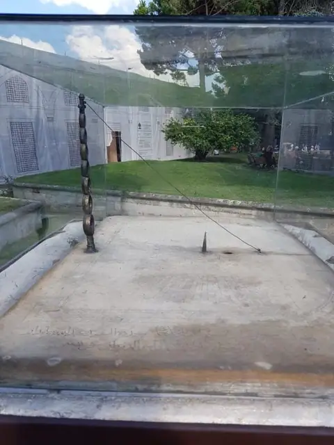
أخبار علمية · المزولة أيام الدولة العثمانية في متحف في تركيا -
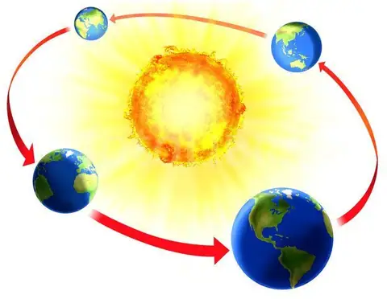
أخبار علمية · السؤال: ما هي الأدلة المقبولة لدوران الأرض حول الشمس؟ -
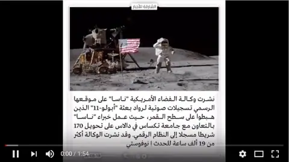
أخبار علمية · وكالة ناسا تنشر تسجيلات صوتية لرحلة “ابولو-11” -
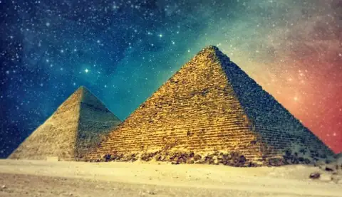
أخبار علمية · هندسة الهرم الأكبر وعلم الفلك -
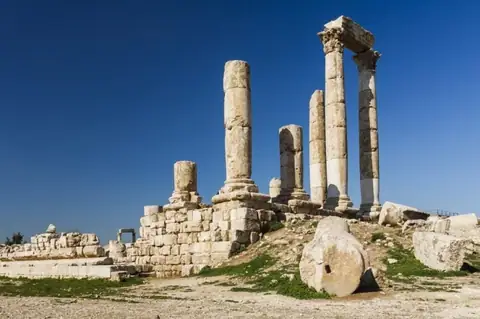
أخبار علمية · على جبل القلعة في الأردن -
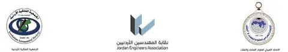
أخبار الاتحاد · نقابتي المهندسين والمعلمين فرع إربد أقامت الجمعية الفلكية الأردنية والاتحاد العربي لعلوم الفضاء والفلك نشاطا خاصا بمنطقة عبين
تموز 2018
- أخبار علمية · رصد أطول خسوف 2018
- أخبار علمية · رصد أطول خسوف يوم الجمعة 27/7/2018
- أخبار علمية · تصوير خسوف القمر 2018 – تصوير محمد ريحان من سماء الشارقة
- أخبار علمية · “خسوف القمر الدموي” أطول خسوف للقمر خلال القرن الحالي
- أخبار علمية · العرب والأوروبيون سيشاهدون أطول خسوف منذ 100 عام – هاني الضليع
- أخبار علمية · الأسباب التي ستجعله أطول خسوف
- أخبار الاتحاد · بيان الجمعية الفلكية الأردنية حول الحدث الفلكي المهم “تقابل المريخ والشمس وخسوف القمر”
-
 محاضرات وفعاليات · دعوة لحضور الأمسية الفلكية “الخسوف الأطول في القرن والاقتراب النادر للمريخ”
محاضرات وفعاليات · دعوة لحضور الأمسية الفلكية “الخسوف الأطول في القرن والاقتراب النادر للمريخ”
- أخبار علمية · خسوف كلي يوم الجمعة الموافق 14 ذو القعدة 1439هـ (27 يوليو 2018)
- أخبار علمية · خسوف كلي للقمر في سماء السلطنة لمدة ساعة و43 دقيقة.. الجمعة
- أخبار علمية · يسر مركز سايتك دعوتكم لمشاهدة ظاهرة الخسوف
- أخبار علمية · باحث ومعدل: هكذا ارتبطت ظاهرة الخسوف بالتاريخ الإسلامي.. وهذا سبب دعوة الرسول إلى صلاة الخسوف
- أخبار علمية · المخيم الفلكي العائلي الثاني عشر من نشاطات الجمعية الفلكية العمانية
- أخبار علمية · صلاة الكسوف والخسوف – يوتيوب
- أخبار علمية · الجمعية الفلكية” تنظم رصدا لتلازم المريخ والقمر الجمعة
- أخبار علمية · من فعاليات ورشة الرصد الفلكي في جامعة الزرقاء
-
 محاضرات وفعاليات · دعوة للمشاركة في رصد ومشاهدة مجموعة ظواهر فلكية فريدة!
محاضرات وفعاليات · دعوة للمشاركة في رصد ومشاهدة مجموعة ظواهر فلكية فريدة!
- أخبار علمية · خسوف كلي للقمر على سماء المملكة.. غداً
- أخبار علمية · أسئلة وأجوبة عن العواصف الشمسية
-
 أخبار علمية · مجهود اسبوعين متتاليين لشرح الخسوف الكلى القادم والذي سيرى كاملا في جمهورية مصر العربية من أوله لآخره..
أخبار علمية · مجهود اسبوعين متتاليين لشرح الخسوف الكلى القادم والذي سيرى كاملا في جمهورية مصر العربية من أوله لآخره..
- محاضرات وفعاليات · ورشة الرصد الفلكي في جامعة الزرقاء
- أخبار علمية · دليل المبتدئ في علم الفلك من الصفر
-
 أخبار علمية · Astronomy Events
أخبار علمية · Astronomy Events
-
 أخبار علمية · أطلقت باكستان بنجاح قمرين صناعيين بنجاح – فيديو
أخبار علمية · أطلقت باكستان بنجاح قمرين صناعيين بنجاح – فيديو
- أخبار علمية · وكالة ناسا تعترف بمعجزة زيت الزيتون كما ورد في النص القرآني – فيديو
- أخبار علمية · اللقاء التاريخي يبن الأرض وكوكب المريخ 2018 – هاني الضليع
حزيران 2018
- أخبار علمية · نشرة مدارات – العدد السادس يوليو – 2018
- أخبار علمية · السفر أسرع من الضوء
- أخبار علمية · إبداعات فلكية … تصوير الفلكي السعودي تركي العمري
- أخبار علمية · الانقلاب الصيفي وأطول نهار في السنة!!
- أخبار علمية · كيف تعمل القبة الفلكية وما فائدتها؟ – نضال قسوم
- أخبار الاتحاد · مشاركة الدكتور عوني محمد الخصاونة مدير المركز الإقليمي وأمين عام الاتحاد العربي لعلوم الفضاء والفلك في الاجتماع-61 للجنة الأمم المتحدة لاستخدام الفضاء الخارجي في الأغراض السلمية
- أخبار علمية · اعادة تجربة إراتوستينس في قياس محيط الأرض في قسنطينة – الجزائر
-
 محاضرات وفعاليات · المؤتمر العربي الثاني عشر لعلوم الفضاء والفلك والمؤتمر الفلكي الإسلامي السابع
محاضرات وفعاليات · المؤتمر العربي الثاني عشر لعلوم الفضاء والفلك والمؤتمر الفلكي الإسلامي السابع
- أخبار علمية · زيارة تفقدية لمجريات الأعمال الإنشائية لمبنى المركز الإقليمي الدائم في الأردن
- أخبار علمية · مصر تنوي إنشاء “مدينة الفضاء”
- أخبار علمية · كيف تولد المذنبات؟
- أخبار علمية · رصد الهلال واستقبال العيد – للأطفال والعائلات
- أخبار علمية · الموافقة على إنشاء وكالة الفضاء المصرية
أيار 2018
- أخبار علمية · ويتفكّرون (2): أُمَمٌ أَمثالُكُم – نضال قسوم
- أخبار علمية · ويتفكّرون (3): حياة الأشجار الاجتماعية – نضال قسوم
- أخبار علمية · في إحدى محاولات نيوتن لفهم الكون..
- أخبار الاتحاد · مفتي المملكة ومدير المركز الجغرافي الملكي وممثل معهد الفلك: صيامنا صحيح
-
 محاضرات وفعاليات · ندوة: لا تعارض بين الشريعة والفلك في تحديد هلال رمضان
محاضرات وفعاليات · ندوة: لا تعارض بين الشريعة والفلك في تحديد هلال رمضان
- أخبار علمية · بيان هام حول أول شهر رمضان
- أخبار علمية · هل الأكوان المتوازية حقيقية؟ – هاني الضليع/ الجزيرة نت
- أخبار علمية · اكتشاف كويكب قديم منفي خلف نبتون – ترجمة: م. ماجد أبو زاهرة
- أخبار علمية · هوكينج” : النظرية الاخيرة لأصل الكون – ترجمة: م. ماجد أبو زاهرة
- أخبار علمية · منهجية فقهية لتقدير اوقات الصلاة والصيام لخطوط عرض عليا – للباحث السعودي عدنان قاضي
- محاضرات وفعاليات · فعاليات المؤتمر العربي الثاني عشر لعلوم الفضاء والفلك والمؤتمر الفلكي الإسلامي السابع
- أخبار علمية · ” غايا ” تصدر فهرس لحوالي 1.7 مليار نجم – ترجمة: م. ماجد أبو زاهرة
-
 أخبار علمية · الأنواء الفلكية والمواسم الزراعية في تهامة – إعداد الأستاذ: حسن هبه الزبيدي
أخبار علمية · الأنواء الفلكية والمواسم الزراعية في تهامة – إعداد الأستاذ: حسن هبه الزبيدي
نيسان 2018
-
 أخبار علمية · دراسة: “درب التبانة” قد تضم عدة ثقوب سوداء ضخمة “تائهة” – ترجمة: م. ماجد أبو زاهرة
أخبار علمية · دراسة: “درب التبانة” قد تضم عدة ثقوب سوداء ضخمة “تائهة” – ترجمة: م. ماجد أبو زاهرة
-
 أخبار علمية · كيف تشكلت سحابة أورت عند ولادة نظامنا الشمسي؟
أخبار علمية · كيف تشكلت سحابة أورت عند ولادة نظامنا الشمسي؟
- أخبار علمية · اكتشاف “كبريتيد الهيدروجين” أعلى الغلاف الجوي لأورانوس – ترجمة: م. ماجد أبو زاهرة
-
 محاضرات وفعاليات · رحلة افتراضية خارج مجموعتنا الشمسية
محاضرات وفعاليات · رحلة افتراضية خارج مجموعتنا الشمسية
- أخبار علمية · الأسطرلاب والربع المجيّب أداتان فلكيتان مدهشتان – هاني الضليع
- أخبار علمية · كلمة البروفيسور نضال قسوم بمناسبة حفل اختتام المسابقة العلمية سيرتا علوم 10
- أخبار علمية · المهرجان الوطني السادس العاشر في علم الفلك الجماهيري من 22 إلى 24 مارس 2018
- أخبار علمية · المهرجان الوطني السادس العاشر في علم الفلك الجماهيري – قسنطينة
- أخبار علمية · الزمن يعود للوراء “فيزيائيون يوفرون مجموعة من الظروف لمشاهدته”
- أخبار الاتحاد · النجم الجديد – بقلم أ. محمد ريحان
- أخبار الاتحاد · النجوم الغريبة وآلية تشكلها ودورها في فض النزاع القائم بين النسبية والميكانيك الكوانتي – د. محمد العصيري
- أخبار علمية · الأنواء الفلكية والمواسم الزراعية في تهامة – أ. حسن هبه الزبيدي
آذار 2018
- أخبار علمية · انفجارات النجوم وأثرها في الحياة على الأرض – هاني الضليع
- أخبار علمية · هوكينغ: الكون مليء بمفاجآت لا نعرفها – ترجمة عبدالاله مجيد
-
 محاضرات وفعاليات · المهرجان الوطني السادس عشر في علم الفلك الجماهيري
محاضرات وفعاليات · المهرجان الوطني السادس عشر في علم الفلك الجماهيري
-
 أخبار علمية · كل شيء يبدو مستحيلًا ممكن.. «هوكنج» نموذجًا
أخبار علمية · كل شيء يبدو مستحيلًا ممكن.. «هوكنج» نموذجًا
- أخبار علمية · ناسا تحتاج مساعدتك …
- أخبار علمية · نشاط فلكي | لماذا لا يسقط القمر على الأرض؟ إعداد: الدكتور صالح الصعب
- أخبار علمية · من فعاليات الملتقى التونسي في جزيرة جربة
-
 أخبار علمية · أبواب الشام السبعة وارتباطها بالشمس والكواكب
أخبار علمية · أبواب الشام السبعة وارتباطها بالشمس والكواكب
- أخبار علمية · لماذا لا نشعر بدوران الأرض؟
-
أخبار علمية · وفاة عالم الفيزياء البريطاني ستيفن هوكينغ
-
 أخبار علمية · الشمس 101 – فيديو مترجم HD
أخبار علمية · الشمس 101 – فيديو مترجم HD
-
 محاضرات وفعاليات · المهرجان الوطني السابع للشباب هواة علوم الفلك وتقنيات الفضاء
محاضرات وفعاليات · المهرجان الوطني السابع للشباب هواة علوم الفلك وتقنيات الفضاء
- أخبار علمية · مشروع فينكس
- أخبار علمية · شكر وتقدير إلى من ساهم لتكون سلطنة عمان من الدول المتعاونة في عمليات المحاكاة لرواد الفضاء
-
 محاضرات وفعاليات · دورة أساسيات علم الفلك – د. أنور صالح آل محمد / يوتيوب
محاضرات وفعاليات · دورة أساسيات علم الفلك – د. أنور صالح آل محمد / يوتيوب
شباط 2018
-
 محاضرات وفعاليات · لقاء تلفزيوني مع الأستاذ هاني الضليع والطالبة الأردنية سارة أمجد غزال
محاضرات وفعاليات · لقاء تلفزيوني مع الأستاذ هاني الضليع والطالبة الأردنية سارة أمجد غزال
- أخبار علمية · هل الأرض في منأى عن خطر النيازك؟
-
 أخبار علمية · هل ستسقط “تسلا” على الأرض؟
أخبار علمية · هل ستسقط “تسلا” على الأرض؟
- أخبار علمية · القمر الروسي سبوتنيك يكتب حروف عصر الفضاء – هاني الضليع
-
 أخبار علمية · بدء التجارب العالمية لمحاكاة العيش على كوكب المريخ في صحراء مرمول
أخبار علمية · بدء التجارب العالمية لمحاكاة العيش على كوكب المريخ في صحراء مرمول
-
 أخبار الاتحاد · رئيس الاتحاد الدكتور حميد مجول النعيمي وأمين عام الاتحاد الدكتور عوني الخصاونة في زيارة لموقع المركز الإقليمي لتدريس علوم وتكنولوجيا الفضاء لغرب آسيا
أخبار الاتحاد · رئيس الاتحاد الدكتور حميد مجول النعيمي وأمين عام الاتحاد الدكتور عوني الخصاونة في زيارة لموقع المركز الإقليمي لتدريس علوم وتكنولوجيا الفضاء لغرب آسيا
-
 أخبار علمية · “تظاهرة لحشد من المجرات” تكشف عن جثة مجرة هامدة
أخبار علمية · “تظاهرة لحشد من المجرات” تكشف عن جثة مجرة هامدة
- أخبار علمية · كان رصد الكواكب خارج المجموعة الشمسية خيالا، فكيف الحال خارج مجرتنا؟
- أخبار علمية · حدث غير مسبوق يهدف لكشف الأحداث التي تجري في أفق الحدث
- أخبار علمية · كم كبير من المعلومات تم تكميمها في أول مكالمة فيديو آمنة
- أخبار علمية · ضيف عزيز يطرق باب المجموعة الشمسية
- أخبار علمية · موكب.. بصحبة كويكب
- أخبار علمية · كل ما تودّ معرفته عن الثقوب السوداء – نضال قسوم
- أخبار علمية · ما هي نظرية تضخم الكون؟ – د. باسل الطائي
- أخبار علمية · أصغر صاروخ حامل “SS-520”
- أخبار علمية · أول قمر صناعي بسواعد عربية 100%
- أخبار علمية · كيف تعمل القبة الفلكية وما فائدتها؟، نضال قسوم – فيديو
كانون الثاني 2018
-
محاضرات وفعاليات · المهرجان الوطني السابع للشباب هواة علوم الفلك
- أخبار الاتحاد · مقابلة الدكتور عوني محمد الخصاونة الإذاعة الأردنية – صوتية
-
 أخبار علمية · القمر الأزرق العملاق المخسوف – بقلم دلال اللالا
أخبار علمية · القمر الأزرق العملاق المخسوف – بقلم دلال اللالا
-
 أخبار علمية · برنامج علمي يقدمه الدكتور نضال قسوم
أخبار علمية · برنامج علمي يقدمه الدكتور نضال قسوم
- أخبار علمية · التنجيم.. ومن أيّ البروج أنت؟ – د. هاني الضليع
-
 أخبار علمية · النجوم النابضات.. نجوم ماتت لتحيا – هاني الضليع
أخبار علمية · النجوم النابضات.. نجوم ماتت لتحيا – هاني الضليع
-
 أخبار علمية · غرائب لا تعرفها عن المجموعة الشمسية – هاني الضليع
أخبار علمية · غرائب لا تعرفها عن المجموعة الشمسية – هاني الضليع
-
 محاضرات وفعاليات · محاضرة للدكتور عبد القادر عابد بعنوان “قبة السماء تتكلم” – فيديو
محاضرات وفعاليات · محاضرة للدكتور عبد القادر عابد بعنوان “قبة السماء تتكلم” – فيديو
-
 محاضرات وفعاليات · محاضرة بعنوان الأكوان المتوازية للدكتور عمار السكجي في مقر الجمعية الفلكية الأردنية
محاضرات وفعاليات · محاضرة بعنوان الأكوان المتوازية للدكتور عمار السكجي في مقر الجمعية الفلكية الأردنية
- أخبار علمية · 2018 عام الأحداث الفلكية – هاني الضليع
-
 أخبار علمية · أحدث صور ناسا لكوكب المشتري وبقعته الحمراء
أخبار علمية · أحدث صور ناسا لكوكب المشتري وبقعته الحمراء
-
 محاضرات وفعاليات · تسجيل تلفزيوني لمحاضرة الدكتور محمد باسل الطائي في مقر الاتحاد
محاضرات وفعاليات · تسجيل تلفزيوني لمحاضرة الدكتور محمد باسل الطائي في مقر الاتحاد
- أخبار الاتحاد · احتفالية الجمعية الفيزيائية في الأردن بالتعاون مع الجمعية الفلكية الأردنية
-
 محاضرات وفعاليات · الاتحاد العربي لعلوم الفضاء والفلك يشارك في المؤتمر الدولي الثالث لتاريخ العلوم عند العرب والمسلمين
محاضرات وفعاليات · الاتحاد العربي لعلوم الفضاء والفلك يشارك في المؤتمر الدولي الثالث لتاريخ العلوم عند العرب والمسلمين
-
 أخبار علمية · استقبال فرقة الرواد الكشفية في المرصد الفلكي بوابة السماء
أخبار علمية · استقبال فرقة الرواد الكشفية في المرصد الفلكي بوابة السماء
- أخبار الاتحاد · بالإجماع الأردن مديراً وعضواً للمكتب الإقليمي لتنمية الفلك
-
 محاضرات وفعاليات · محاضرة فلكية بعنوان دورة عن حياة النجوم والتلسكوبات في الجمعية الفلكية الأردنية
محاضرات وفعاليات · محاضرة فلكية بعنوان دورة عن حياة النجوم والتلسكوبات في الجمعية الفلكية الأردنية
- أخبار علمية · النهري: مصر قادرة على استضافة وكالة الفضاء الإفريقية لأنها بوابة إفريقيا
- أخبار علمية · فوز 3 أميركيين بجائزة نوبل في الفيزياء لعام 2017.. “اكتشافهم يفتح عوالم غير مرئية”
-
 محاضرات وفعاليات · المؤتمر العربي الثاني عشر لعلوم الفضاء والفلك والمؤتمر الفلكي الإسلامي السابع
محاضرات وفعاليات · المؤتمر العربي الثاني عشر لعلوم الفضاء والفلك والمؤتمر الفلكي الإسلامي السابع
لا توجد منشورات من هذا النوع في هذه السنة.